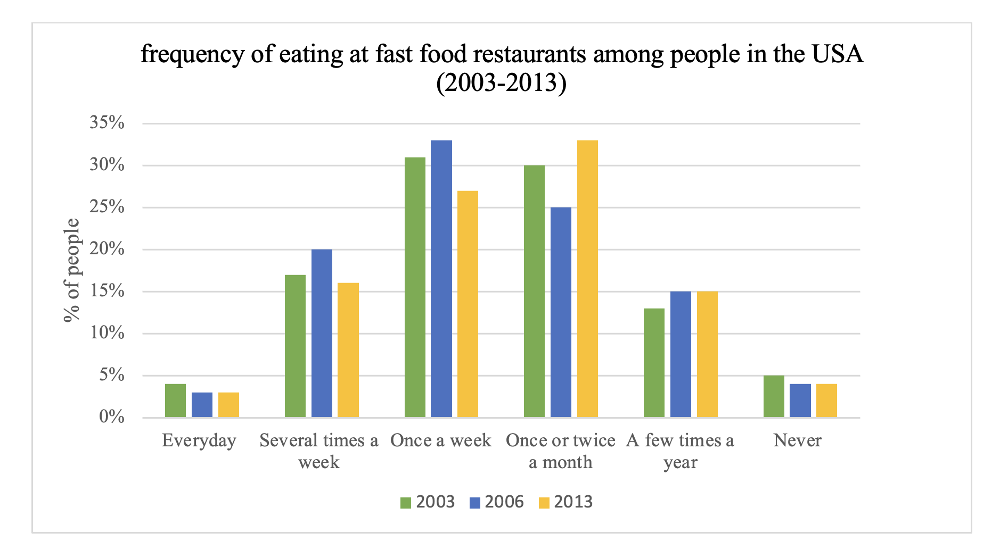

You should spend about 20 minutes on this task.
The bar chart provides information about how often people in the USA spent ate fast food from 2003 to 2013.
Summarise the information by selecting and reporting the main features making comparisons where relevant.
Write at least 150 words.
